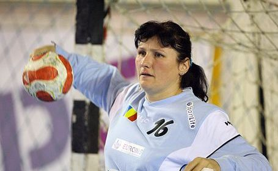
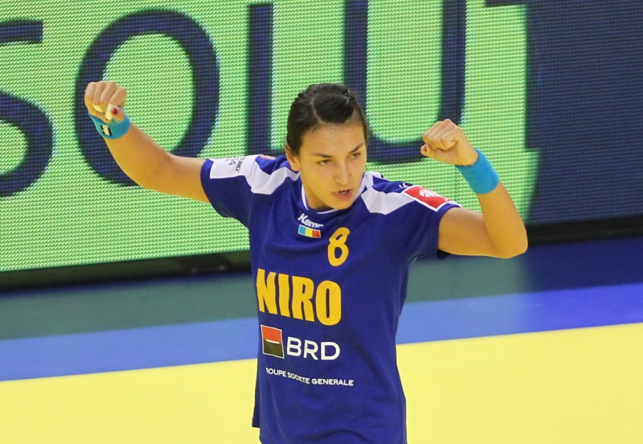

Totul despre handbal
Legende ale handbalului romanesc
Luminita Hutupan
Luminița Dinu-Huțupan este o fostă jucătoare de handbal din România. În prezent este antrenor de portari la Centrul Național Olimpic de Excelență (CNOE) din Râmnicu-Vâlcea.Luminița Dinu-Huțupan este considerată cea mai bună portăriță din toate timpurile a României.[1] Pe 15 ianuarie 2012 a intrat în poarta Oltchimului din postura de rezervă, într-un meci cu HCM Baia Mare.[2] Pe 4 februarie 2012 a revenit într-un meci din Liga Campionilor EHF cu Krim Ljubljana.[3].Mai mutlte aici..
Cristina Neagu
stina Neagu s-a născut în București, pe data de 26 august 1988, în cartierul Ghencea. Ea are două surori mai mari.Copilăria și anii de juniorat (2000 — 2006)[modificare | modificare sursă]Neagu a intrat în lumea handbalului întâmplător, în 2000, când avea doar 12 ani, la una din orele de sport, prin intermediul antrenoarei Maria Covaci..Mai mutlte aici..